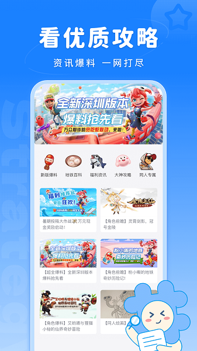
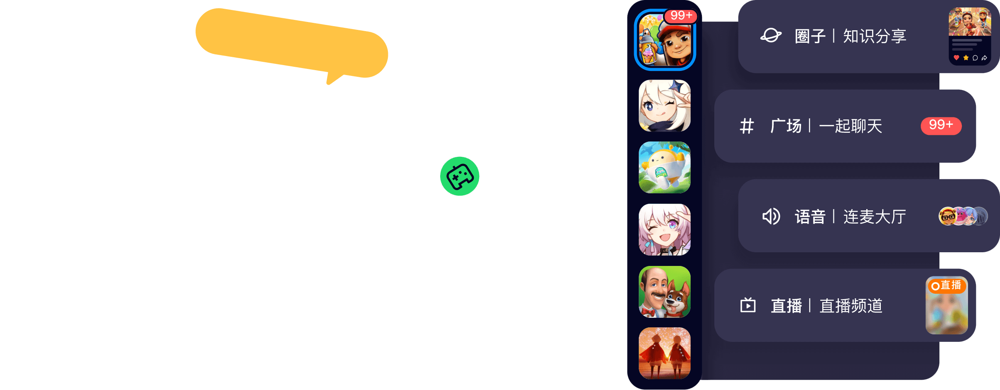

把 Fanbook 嵌进每周运营流水线 从手动搬砖到一条链打通
一个游戏社区运营者用 Fanbook 重构每周工作流的全过程——旧流程散在四个工具之间、新流程收拢到一套服务器里，讲清每个衔接点怎么接。
每周一晚八点，我要做的事以前是这样的：在微信群贴本周活动公告、在 QQ 群同步一份、去 Discord 服务器给机器人喂新的 FAQ 文本、再去 Notion 把这周的玩家问题整理成知识库条目——四步、四个工具、两次手动复制粘贴，最头疼的是 QQ 群和 Discord 那边还各有一套人在管，公告内容经常对不上。
这套流程卡的地方其实不是工具不够多，而是每个工具只覆盖一段链路：微信群负责通知、QQ 群负责互动、Discord 负责自动化、Notion 负责沉淀——但它们之间没有任何衔接，每换一个工具就意味着一次手动搬运。后来我把整套东西收拢到了一套 Fanbook 服务器里，现在每周的运营流程变成了：在 Fanbook 的问答频道整理好 FAQ、BOT 自动同步到各频道、活动公告直接贴进公告频道、新人进来自动看到引导——一次输入，全程流转。
旧流程怎么散的
先把旧流程摊开来看看，才能看清 Fanbook 到底解决了什么。
- 公告环节：微信群发一份、QQ 群发一份、Discord 频道发一份——三个入口各发一次，任何一次漏了就是用户看不到活动。上周就出过小问题：微信群发了活动日程但忘了同步到 QQ 群，结果 QQ 群里有人问了整整一下午。
- FAQ 环节：玩家在 QQ 群和 Discord 频道问的高频问题，我要手动摘出来贴进 Notion 的知识库，然后再手动把最新的 FAQ 文本喂给 Discord 机器人。中间任何一步没做，下一周同样的问题还会再被问十遍。
- 新人引导环节：微信群和 QQ 群都是加进来一堆陌生人，没人管就会变成死群；Discord 有欢迎机器人但配置起来挺麻烦，而且新人从 QQ 群转过来还要额外注册账号。
- 权限管理环节：版主在三个平台各有一套权限配置，有的平台给多了、有的给少了，上周有人在 QQ 群乱踢人就是因为那边的版主权限没收紧。
这四步看起来每件事都能在各自的工具里完成，但每一步之间没有衔接。我在中间当搬运工，搬的是公告文本、FAQ 条目、新人引导信息——每搬一次就有一次出错的可能。
新流程：Fanbook 插进了哪几环
Fanbook官网的核心概念我花了一个下午摸清了——服务器、频道、角色、乐豆——搞懂之后才敢动手搭流程。它不是另一个 IM，而是一套带管理能力的工具链，安装包从官方下载拿，有手机端也有桌面端，这让我能把之前散在四个工具的事往它里头塞。
第一步：频道分类对应旧工具的职能
我在一套服务器里按 ClassChannel 建了五个分组：公告通知、实时互动、问答沉淀、活动组织、VIP 专属。每个分组下再建具体频道，对应旧流程各环节：
#活动公告（文本频道，频道级权限覆盖只让管理员发消息）→ 替代微信群和 QQ 群的公告环节#玩家讨论（文本频道）→ 替代 QQ 群的实时互动#问答中心（问答频道）→ 替代 Notion 的知识库 + Discord 机器人的 FAQ 环节#新人指南（文本频道，频道级权限覆盖只让管理员和版主发消息）→ 替代手动新人引导#官方活动（圈子频道）→ 用来发活动海报和图文回顾，圈子适合长图文分享
第二步：角色体系解决权限混乱
旧流程的权限混乱是因为三个平台各自配了一套。在 Fanbook 里我建了四个角色：
- 所有者：我自己，跳过所有权限检查不用特意配
- 管理员：全局管理权限，负责发公告、踢人、配频道级权限覆盖
- 版主：只给 VIEW_CHANNEL、SEND_MESSAGES、MANAGE_MESSAGES、MUTE_MEMBERS 这几个权限，不给 KICK_MEMBERS 和 BAN_MEMBERS——踢人和封禁集中在管理员手里，上次乱踢人的事不会再发生
- 活动组织者：给 CREATE_INSTANT_INVITE、MANAGE_CHANNELS、SEND_MESSAGES、ADD_REACTIONS、ATTACH_FILES，可以创建临时频道发活动海报，但不给治理权限
关键是频道级权限覆盖。比如 #活动公告 频道，我给默认角色（@everyone）取消了 SEND_MESSAGES，只给管理员角色勾选；#新人指南 频道同理，普通成员只能看不能发——这两个设置在频道设置里点几下就能完成，不用改角色全局权限。
第三步：问答频道打通沉淀环节
这一步是 Fanbook 最能替代旧流程里 Notion + Discord FAQ 的地方。问答频道和文本频道不一样，它的内容按「问题 → 回答」组织，优质回答可以标记为最佳答案置顶。
以前我要手动把 QQ 群和 Discord 的高频问题摘出来贴 Notion，再喂给机器人。现在的流程是：
- 玩家在
#问答中心提问，版主或老成员回答 - 管理员把好的回答标记为「最佳答案」，置顶在问题下方
- 高频问题整理成置顶帖，新成员进来直接能看到现成答案
这样 FAQ 就不是我每周手动搬运的产物了，而是从社区里自然生长出来的——我只需要偶尔去检查一下问答频道的内容质量，不用从零开始写。这一步直接砍掉了旧流程里 Notion 那一段，节省了每周大概 30 分钟的手动整理时间。

实操细节：两个容易断链的环节
流程搭起来之后跑了两周，发现有两个地方特别容易出问题，在这里记下排查思路。
环节一：权限排错——90% 是频道级覆盖的锅
有个版主某天上来说他看不到刚创建的 #活动公告 频道。我一开始以为是角色里没给 VIEW_CHANNEL，检查了角色权限发现没问题。后来才想起Fanbook文档里明确写了权限判断有三层：所有者跳过检查 → 频道级权限覆盖优先 → 角色权限并集。结果是那个频道的权限设置里给默认角色取消了 VIEW_CHANNEL，而版主角色没在频道级单独加进去——角色全局有权限但频道里被显式禁掉了。
排查顺序固定下来了：先查是不是所有者 → 查频道级权限覆盖 → 查角色权限 → 查角色优先级（高优先级可能覆盖低优先级）→ 最后查封禁状态。后来再没在权限上踩过坑。
环节二：BOT 自动化的衔接点
Fanbook 支持开放 Bot API，我搭了一个简单的机器人做两件事：新人进来自动发欢迎消息引导去 #新人指南 和 #问答中心；定时把 #问答中心 里本周新标记为最佳的答案摘要同步到 #官方活动 圈子。
旧流程里 Discord 机器人和 Notion 之间没有自动同步，我每周手动喂 FAQ 文本。现在 BOT 直接读 Fanbook 自己的问答频道数据，数据源头统一了就不会有两边内容对不上的问题。

效果和边界
跑了三周，实际变化是这样的：
- 公告环节少了两次手动复制——以前三个平台各发一份，现在在
#活动公告发一次就够了 - FAQ 环节砍掉了 Notion 那段——以前每周整理 30 分钟，现在只需要每周花 5 分钟检查问答频道的最佳答案质量
- 新人重复提问降了大概 60%——以前新人进来没人管会在讨论频道重复问同样的新手问题，现在引导直接去问答频道搜答案
- 权限问题零发生——角色 + 频道级覆盖的双层配置比三个平台各配一套清晰多了
但这套流程也不是什么情况都适用。如果你的社区是 200 人以下的小群，微信或 QQ 群足够用，Fanbook 这套层级架构反而是负担——光建服务器、建频道分组、配角色权限就要花大半天，不值当。它适合的是 500+ 人、有明确分工（管理员、版主、活动组织者）、有内容沉淀需求的垂直兴趣社区。
另外乐豆和变现这块我没怎么用，主要是我这个社区还没到变现阶段。但 Fanbook 的变现闭环是内置的——乐豆签到获取、打赏创作者、购买订阅内容，如果你有这方面需求，它比在 QQ 群里发红包或者在微信群里做知识星球要顺得多，因为整个变现链路都在同一套服务器里，不用跳转到外部。
这套流程目前还在跑，每周一晚八点我只需要花 10 分钟检查一下频道权限覆盖有没有需要调整的、问答频道的最佳答案有没有漏标的，然后发一次公告——旧流程的四步手动搬运，现在变成了一次输入 + 偶尔的检查。Fanbook 的中文整理资料我同步到了GitHub、Gitee、GitCode三个地方，做了灾备也方便国内用户选着访问。